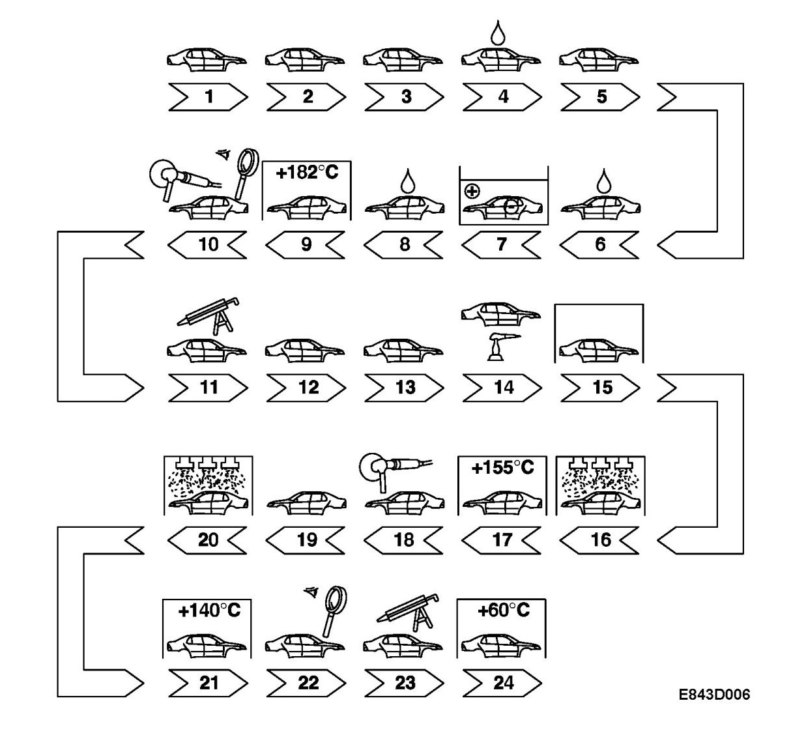

The Surface Treatment Process
The Surface Treatment Process

The corrosion protection measures start in the body shop. Galvanized sheet metal is used for the parts of the body that are most exposed to corrosive attack. Refer also to Galvanized body parts
1. Cleaning the bodywork from the bodyshop. When the body arrives at the paint shop, it is initially cleaned to remove all the mechanical processing residue and most of the grease and oil that has resulted from body assembly.
2. Degreasing In order to provide as good a base as possible for further surface treatment, the remaining grease is removed from the body using an alkaline degreasing agent.
3. Phosphatising Phosphatising gives the metal good basic protection and a base for the primer.
4. Rinsing The body is rinsed to remove residue from the phosphatising.
5. Passivation A solution containing chromium compounds is flushed over the bodywork. This makes the phosphate coating denser and further increases the corrosion protection.
6. Rinsing The body is flushed with desalinated water.
7. Electrocoating The body is lowered into a bath containing anti-corrosion paint and a negative electric current is led to the body. The positively charged paint particles are drawn to the body in the same way as iron filings to a magnet. In this way, a layer of anti-corrosion paint covers the entire body, cavities, joints, etc.
8. Rinsing After electrocoating the body is immersed and flushed clean from surplus paint.
9. Oven hardening The paint from the electrocoating is hardened for 17 minutes after the body has reached a temperature of +182°C.
10. Inspection and grinding Any dust particles and paint runs are removed.
11. Sealing Seams and joints over the whole body are sealed with PVC sealant. This is mainly to prevent damp from entering but it also acts as a sound insulator.
12. Noise suppression mats Noise suppression mats are placed at strategic points in the body to reduce resonance.
13. Cleaning Dust is removed from the body.
14. Underbody treatment Stone chip protection and underbody compound is applied all over the floorpan and in the wheel housings.
15. Oven hardening The body passes through an IR oven to harden the sealant. The noise suppression mats also soften and mould to the form of the body.
16. Intermediate coat The intermediate coat forms a good base for the top coat, for both its adhesion and its appearance. The intermediate coat also contributes to the corrosion protection by withstanding stone chipping. The paint is applied by a robot with rotation cups. When the cups rotate, a fine spray is formed which migrates to the body and gives it an even coat. Interior surfaces that are difficult to reach are painted manually.
17. Oven hardening The intermediate coat is hardened for 32 minutes at a temperature of +155°C.
18. Grinding Any dust particles and paint runs are levelled off.
19. Cleaning Grinding dust and other foreign particles are removed from the body so that it is absolutely clean before the top coat is applied.
20. Top coat The top coat is applied in the same way as the intermediate coat with robots fitted with rotation cups. Metallic paint is applied in two coats. First a thin coat with a high pigment content and then a thick coat of clear enamel to protect the pigment and give it a high gloss.
21. Oven hardening The top coat is hardened for 30 minutes at a temperature of +140°C.
22. Final inspection After painting, the body is inspected rigorously. If any paint runs, scratches or dust particles are found in the paint or if there is any damage in the coating, the body is returned for paint repair before going on to the next station.
23. Anti-corrosion treatment Penetrating wax is injected into cavities in the sills, members, etc.
24. Oven hardening The body is heated to +80°C for approximately 2 minutes so that the cavity wax is optimally dispersed throughout the cavities, and dries.